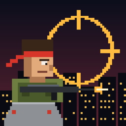
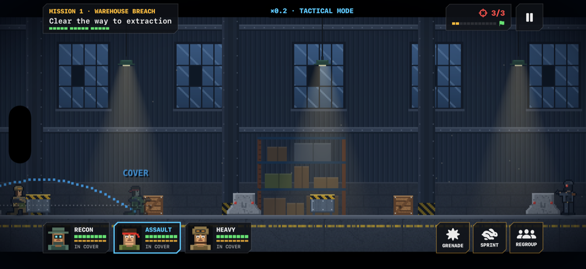
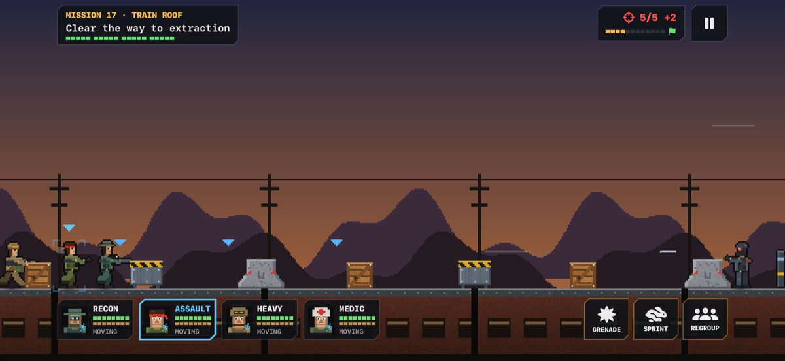

COVER OPS: LAST SQUAD
Command a squad by drawing orders on the battlefield: drag to cover to move, drag to an enemy to suppress, and time slows while your finger is down. 20 missions, a Daily Operation and Defense mode. Works fully offline, no ads.


Support
How do I play? Tap a soldier to select them. Drag from the soldier to a piece of cover to move, or to an enemy for suppressive fire. Buttons at the bottom right are grenades and skills.
I bought the Full Game on another device. Open Settings → Restore Purchases.
Something is wrong. Write to us via the App Store page ("App Support") with your device model and what happened — we read every message.
Поддержка
Как играть? Нажмите на бойца, чтобы выбрать его. Потяните от бойца к укрытию — перебежка, к врагу — огонь на подавление. Кнопки справа внизу — гранаты и умения.
Покупал полную версию на другом устройстве. Настройки → «Восстановить покупки».
Что-то не работает. Напишите нам через страницу игры в App Store («Поддержка приложения»): модель устройства и что случилось.